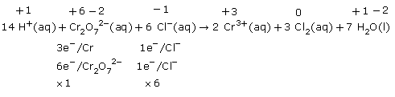
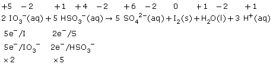
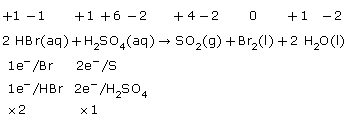

Module 3—Electrochemical Reactions
 Read
Read
To this point you have used oxidation numbers to identify oxidized
and reduced species.
Watch Me: How to Balance Equations Using
Oxidation Numbers Basic
Solution
Read the text and work through the “Sample problems” and “Communication
examples” on pages 589–593 in the textbook to see how using oxidation
numbers can enable you to balance entire redox reactions.
Mastering this method will add to your skills and may save you time in completing problems in the future. You may recall that, in Lesson 3, the method to balance half-reactions and to write a net ionic equation had many steps. You may find this method preferable as an alternative or as a means to check work in which you used the other methods of writing reactions.
 Self-Check
Self-Check
SC 4. Complete “Practice” question 12 on page 593 of the textbook.
Self-Check
Answers
Contact your teacher if your answers vary significantly from the answers provided here.
SC 4.
Practice 12.
a.

b.

c.

After balancing a net ionic equation using oxidation numbers, you should check to see if the charge on each side balances.